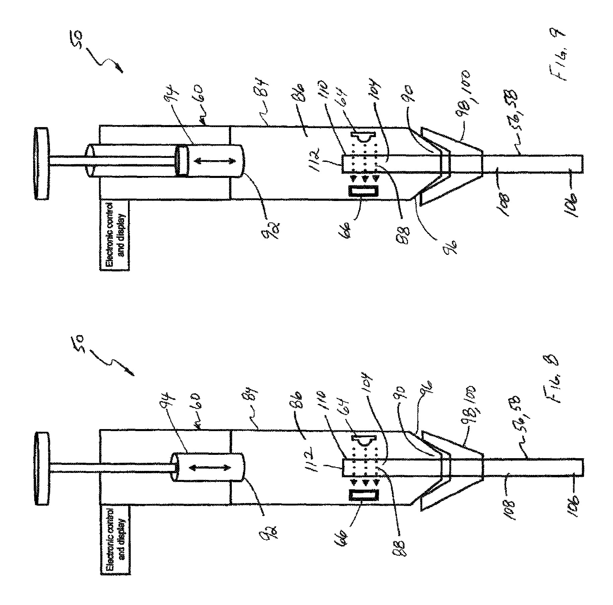
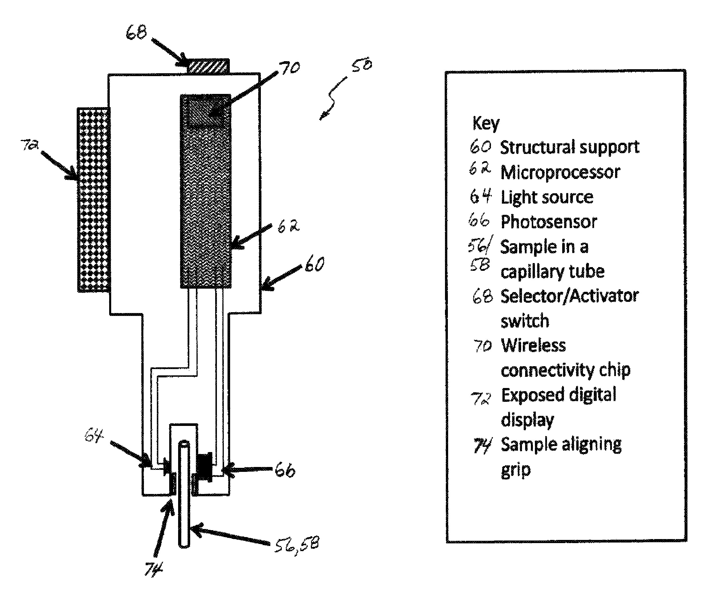
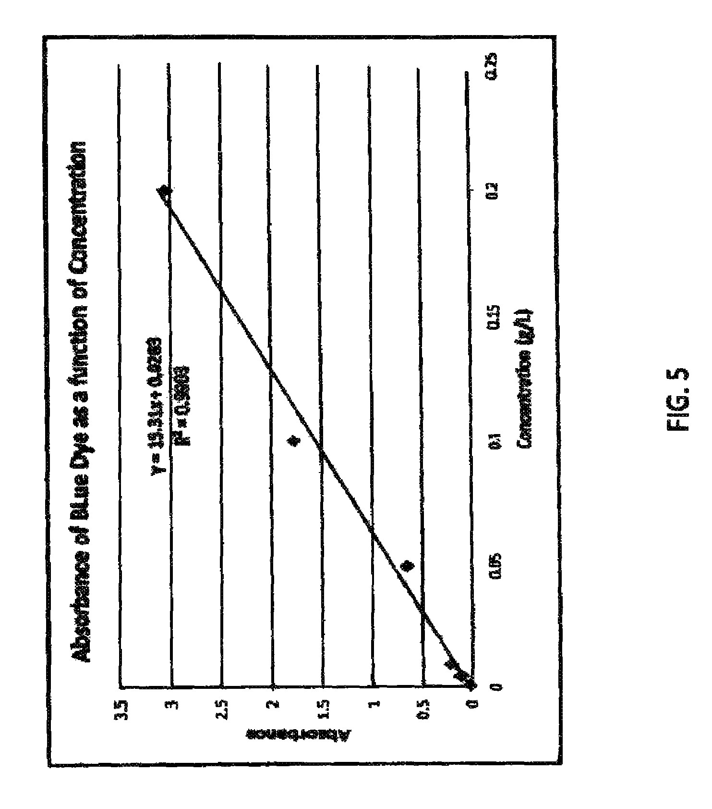

Data Analysis
Operational analytics, trend analysis, bottleneck analysis, KPI reporting, dashboard development, data visualization, exploratory analysis, and decision-support reporting.
Chemical Industry Data | Manufacturing Analytics | Scientific Systems
I combine analytical chemistry, regulated manufacturing, quality systems, Python, SQL, dashboards, and scientific data engineering. I am actively seeking a remote-first data analyst role where chemical-industry and laboratory experience are an advantage.
Remote preferred · Open to hybrid roles in the St. Louis area · Full-time data and analytics opportunities
Chemical Industry Data Analyst, Manufacturing Data Analyst, Quality Data Analyst, Scientific Data Analyst, Laboratory Informatics Specialist
Role Alignment
Chemical & Laboratory Data: Analytical chemistry, UV/Vis, chromatography, stability studies, method development, scientific reporting, and laboratory-quality workflows.
Manufacturing Analytics: Backorders, supply gaps, bottlenecks, operational holds, cycle-time thinking, production prioritization, SAP transactions, and dashboard development.
Quality Systems: cGMP, ISO 13485, Data Integrity SME support, TrackWise, deviations, change controls, CAPA/RCA, SOPs, documentation, and audit readiness.
Data & Software: Python, SQL, R, Tableau, Power BI familiarity, SQLAlchemy, SQLite, FTS5, GitHub, automated testing, data validation, provenance, and reproducible workflows.
Capabilities
Operational analytics, trend analysis, bottleneck analysis, KPI reporting, dashboard development, data visualization, exploratory analysis, and decision-support reporting.
Python, SQL, R, HTML, Jupyter Notebooks, command-line applications, pytest, mypy, Ruff, Git, GitHub, Tableau, and Power BI familiarity.
cGMP, ISO 13485, data integrity, TrackWise deviations and CAPA/RCA workflows, SAP inventory and TECO, SOPs, audit readiness, and manufacturing operations.
Document ingestion, relational schemas, metadata normalization, data provenance, duplicate handling, resumable pipelines, evidence records, SQLAlchemy, SQLite, and FTS5.
Selected Work
Flagship Project · Evidence-Grounded Research Platform
A coordinated Core, AI, and Web platform for scientific research. The system combines offline-first literature ingestion, provenance-preserving evidence records, lexical and vector retrieval, multi-provider federated discovery, and a guarded research copilot that releases narrative answers only when grounding and verification gates pass.
Relevant skills: Python, SQLAlchemy, SQLite, FTS5, PyMuPDF, LLM orchestration, retrieval, data provenance, API/CLI contracts, deterministic pipelines, automated testing, and human-in-the-loop review.
Windows Desktop · Music Authoring Automation
A provenance-aware authoring pipeline that combines a local recording with Guitar Pro or MusicXML score data, aligns shared timing, fans out Bass, Lead, and Rhythm arrangements, supports human review, validates arrangement data, and hands verified XML to the Rocksmith 2014 packaging toolchain.
Relevant skills: Python, desktop workflow design, audio/score alignment, deterministic artifact pipelines, schema validation, audit trails, and product-reality testing.
Unreal Engine 5.8 · Deterministic Simulation
An original scientific-realism space game in active development. Its engine-independent C++20 simulation owns authoritative probe state, fixed-step time, energy, thermal behavior, scanning, movement, and Generation-1 automation while Unreal provides the embodied 3D control and telemetry shell.
Relevant skills: C++20, CMake/CTest, Unreal Engine architecture, deterministic simulation, state-authority boundaries, automation policy design, CI, and evidence-gated product development.
Operational Analytics
Built operational analyses and trend summaries for backorders, supply gaps, TrackWise bottlenecks, quality holds, and action ownership to make production constraints visible and support prioritization.
Relevant skills: data analysis, dashboard development, trend reporting, quality data, manufacturing operations, TrackWise, SAP, and stakeholder communication.
Research & Invention
Co-developed a patented miniature spectrometer using low-volume sampling, LEDs, photodiodes, embedded electronics, Bluetooth Low Energy, and an iPad application for portable dye analysis.
Dashboard
Interactive Tableau dashboard exploring customer segmentation, sales trends, and product popularity with retail transaction data.
Software
Flask application for transforming text-based guitar and bass tabs, previewing riffs with browser audio, and exporting tab, MIDI, or MusicXML.
Research & Invention
Patent: WO2015112919A3
Published: August 6, 2015
Designed and implemented core hardware, fluid-path, embedded-control, and Bluetooth elements of a portable micro-scale UV/Vis system using approximately 0.03 mL samples and rapid multi-wavelength measurements.



Background
Par-Way Tryson - St. Clair, Missouri | November 2014 - June 2015
Tested oils and ingredients, tracked quality trends in Excel, and supported laboratory calibration and quality-control procedures.
BioSpan Technologies Inc. - Washington, Missouri | October 2013 - November 2014
Combined organic chemistry and microbiology methods, used FTIR spectroscopy, and contributed to customer-focused formulation work.
Scutter Enterprises LLC - O'Fallon, Missouri | July 2013 - October 2013
Operated atomic absorption flame spectrometry, prepared samples and standards, and supported laboratory setup and safety processes.
Maryville University - Saint Louis, Missouri | June 2013 - August 2013
Developed a web-based atomic absorption learning module and presented the MicroSpec project at Pittcon 2014.
Education & Development
Education: Bachelor of Science in Biochemistry, Maryville University, St. Louis, Missouri. Graduated May 2014. Minors in Chemistry, Philosophy, and Psychology.
Data Science: Databases and SQL for Data Science with Python; Data Science Methodology; Python Project for Data Science; Python for Data Science and AI; Tools for Data Science.
Machine Learning: IBM Introduction to Machine Learning Specialization, including regression, classification, feature selection, ensemble methods, neural networks, and Bayesian methods.
Compliance: Regulatory Compliance Specialization; Effective Compliance Programs; Privacy Law and Data Protection; Anti-Corruption and Compliance.
Actively Seeking
I am seeking a remote-first data analyst position in the chemical, life-science, manufacturing, laboratory, or quality domain. I am especially interested in work involving operational analytics, scientific data, quality systems, dashboards, process improvement, or laboratory informatics.